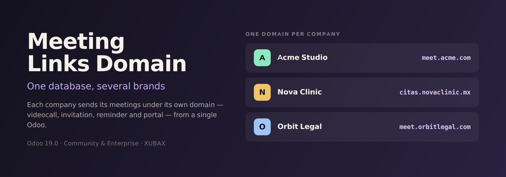

Choose the domain Odoo writes into your meeting links — the videocall URL, the invitation, the reminder and the accept / decline pages — without touching the system base URL the rest of Odoo depends on.
Odoo builds every link of a meeting from a single system-wide parameter. If your database serves several brands, or if the domain your staff uses is not the one a customer should see, the invitation you send out carries the wrong name: the videocall link, the Accept and Decline buttons and the reminder all point at a domain that has nothing to do with the meeting.
Moving that parameter is not a real option — the portal, your website links and any custom development read the very same one, so fixing the meetings breaks everything else.
Every link that points back at a meeting, not only the videocall:
| One domain for every meeting | The simplest case: type the domain and every meeting in the database uses it. |
| One domain per company | Each company gets its own field, and its meetings follow the domain of the company that organises them. Companies left empty fall back to the general one. |
| Odoo default | Leaves the module inert: the database behaves exactly as it did before installing it, which also makes it safe to uninstall. |
A meeting stores its link when it is created, so a change of setting only reaches new ones. The settings page has a button that rebuilds the videocall link of the meetings that have not happened yet. It does not change their access token, so the links you already sent keep working — only the domain in front of them changes.
If you use Odoo's Online Appointments, a booking keeps the domain of the website it was booked on — the one the attendee recognises, and the one Odoo already resolves for that kind of meeting. Only the meetings your team creates follow the domain configured here.
get_base_url() on
calendar.event and calendar.attendee, the
single point Odoo itself uses to turn the relative links of the mail
templates into absolute ones. No mail template is modified and
no field is duplicated, so the module keeps working after an Odoo
update.http(s) address is
ignored rather than patched up: the meeting falls back to the base URL
Odoo would have used on its own.calendar). Online Appointments is
supported when installed, but not required.XUBAX — Cristofferson Reyes
Support: soporte@xubax.com · www.xubax.com